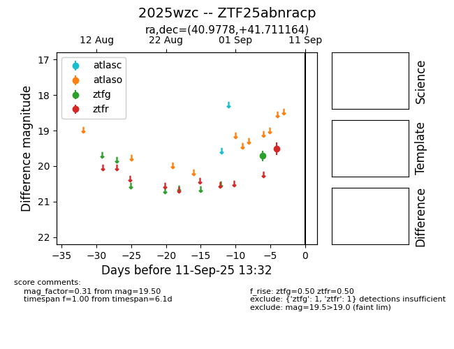

FINK: ZTF25abnracp
Lasair: ZTF25abnracp
ALeRCE: ZTF25abnracp
TNS: 2025wzc
YSE: 2025wzc
ZTF25abnracp (ztf,fink)
2025wzc (tns,yse)
equatorial (ra, dec) = (40.9778,+41.71116)
galactic (l, b) = (144.4486,-16.41365)

last atlaso=19.35, ztfg=20.13, ztfr=19.38
1 atlaso, 4 ztfg, 4 ztfr detections